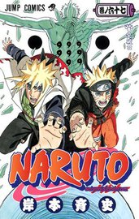
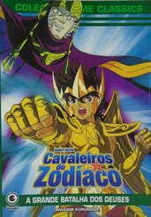
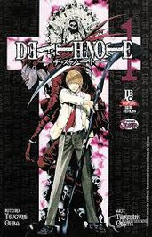
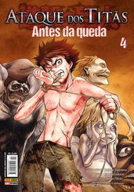
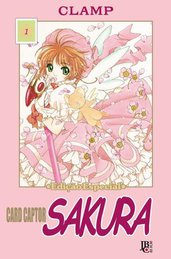

Este site foi criado para o intuito de te ajudar a ver os melhores mangás e animes já criados, até hoje.
Aqui é possivel encontrar os melhores mangás já feitos, e altamente bem vistos pela comunidade.Confira:

Naruto é um dos principais mangás do mundo. A série conta a história do jovem ninja Naruto Uzumaki, que constantemente procura por reconhecimento e sonha em tornar-se Hokage, o ninja líder de sua vila. Dividida em duas partes, a história reúne os anos da pré-adolescência e da própria adolência do personagem.

Os cavaleiros do zodíaco - A grande batalha dos deuses é um dos mangás favoritos dos geeks. Criado e escrito por Masami Murumada, entre 1986 e 1990, a série de mangás reúne quatro sagas: Santuário, Blue Warriors, Poseidon e Hades.

Escrito por Tsuguni Ohba e ilustrado por Takeshi Obata, Death Note criou uma legião de fãs e deu origem a filmes, romances e videogames. O mangá narra a história do estudante Light Yagami, que encontra um caderno que tem o poder de provocar a morte de quem tiver o nome escrito em suas páginas.

Este mangá conta a história de um mundo onde os humanos vivem dentro de grandes muralhas para se proteger de monstros. Escrita e ilustrada por Hajime Isayama, a série também virou anime e ganhou a segunda temporada neste ano.

Seja pelo mangá ou pelo anime, Sakura Card Captors conquistou uma legião de fãs pelo mundo. Os livros contam a história de meninas com poderes mágicos e têm como protagonista Sakura Kinomoto. A narrativa é cheia de mistério e magia.